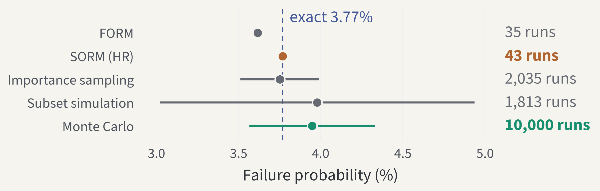
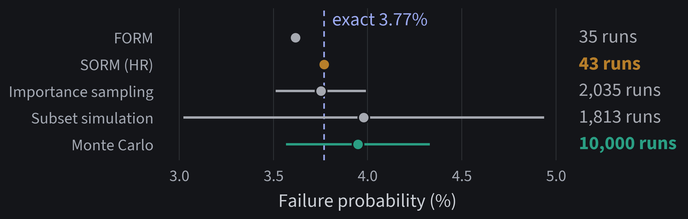
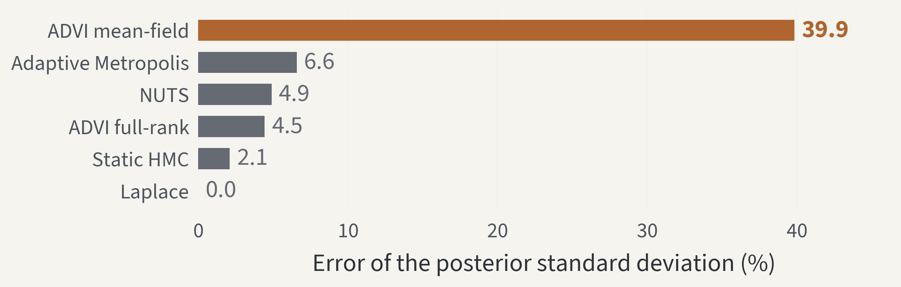
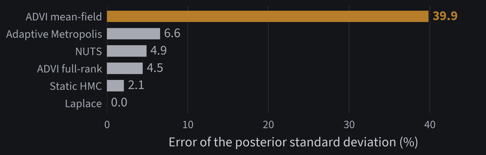
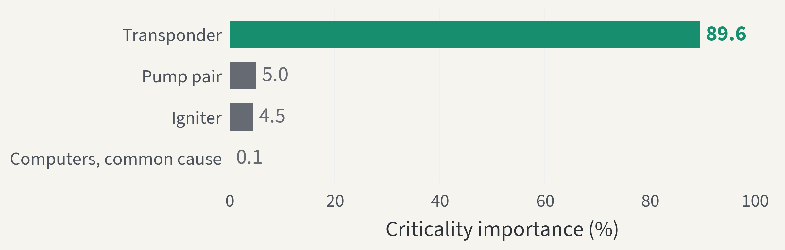
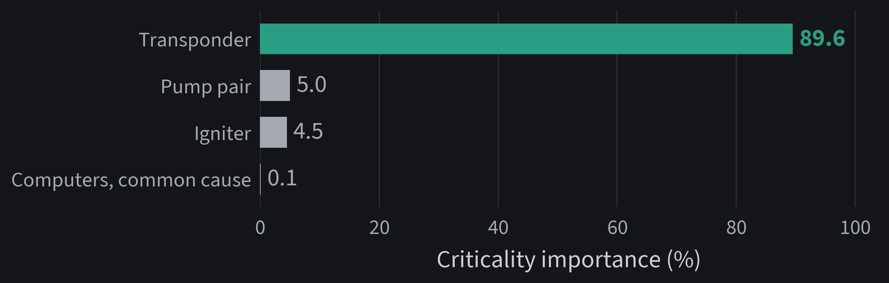
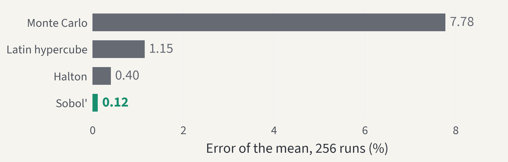
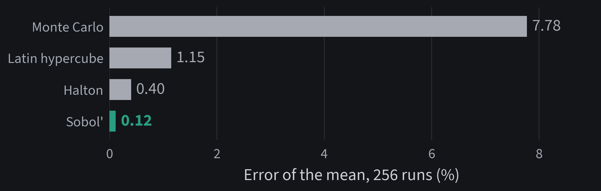

Stats-Lab · probstat 0.19.0
One probabilistic model answers every uncertainty question
Declare the inputs and the simulator once; forward, inverse, risk, and systems questions then share one object and one seed.
Stats-Lab projectprobstat · BSD-3-Clause licencerelease 0.19.0
Why it matters
One simulator raises 8 different uncertainty questions
8
questions about one model, from output spread to failure cost, each answered by its own method: sampling, Sobol indices, FORM, MCMC, emulators.
Can one model object answer every question from one seed?
Method
Four declarations turn a simulator into a study
- InputsJointInput names the marginals, their units, and their copula.
- ModelProbabilisticModel binds the simulator to its quantities of interest.
- StudyUQStudy(model, seed=2026) gives every stage its own child stream.
- StagesEach call records its model runs, seed, and figure in one report.
Results
One seeded study answered four questions in 42,048 model runs
| Question | Answer | Model runs |
|---|---|---|
| What does the margin look like? | 5% quantile: 0.124 kN | 4,096 |
| Which input drives it? | load: total Sobol index 0.71 | 4,096 |
| How likely is failure? | SORM 3.77% · exact 3.77% | 13,856 |
| What is the loss at risk? | CVaR 99%: 49.8 loss units | 20,000 |
| Total cost | one report, one seed tree | 42,048 |
Evidence · reliability
SORM matches the exact failure probability with 43 model runs


Exact 3.77% by quadrature · Monte Carlo 3.95%, 95% interval 3.57%–4.33%, 10,000 runs
One number
×233
fewer model runs than Monte Carlo, at smaller error
10,000 Monte Carlo ÷ 43 SORM runs
Evidence · calibration
MCMC stays within 7% of the exact spread; mean-field ADVI misses 40%


Linear-Gaussian calibration with an exact conjugate posterior · median over 2 seeds
Evidence · systems engineering
The transponder causes 90% of the lander's mission failures


Exact reliability over 720 h: 0.923 from a binary decision diagram · 8 minimal cut sets · no sampling
Verification
Five checks stand between a formula and a release
- Cite600+ sources; every function's docstring names its source key.
- Register1,050+ equations, each with symbols, a source, and its code location.
- Test2,300+ tests against closed forms, enumeration, and Monte Carlo error bounds.
- Audit figuresEvery themed figure keeps its text at 9 pt or larger, inside the canvas.
- IntegrateRuff, strict mypy, all tests, and every lab run on Python 3.11–3.13.
Evidence · benchmarks
Sobol' points cut the error of the mean ×66 at equal cost


Ishigami function, 256 runs per estimate, median over 5 seeds · the quick-start study uses the same design
Limitations
Three limits apply to these results
- FORM and SORM fail on the four-branch system benchmark.
- Benchmarks: probstat 0.17.0, quick mode, 2 to 5 seeds; coverage is coarse.
- Monte Carlo digits move with the seed; each carries its 95% interval.
Conclusion
Yes: one model answered every question from one seed
- SORM hit the exact 3.77% failure probability in 43 runs.
- MCMC matched an exact posterior within 7%; mean-field ADVI missed.
- The transponder causes 90% of the lander's failures.
Sources
Every method on these slides traces to a primary source
- Hasofer, Lind (1974). Exact and invariant second-moment code format. J. Eng. Mech. Div.
- Breitung (1984). Asymptotic approximations for multinormal integrals. J. Eng. Mech.
- Hohenbichler, Rackwitz (1988). Improvement of second-order reliability estimates. J. Eng. Mech.
- Saltelli et al. (2010). Variance based sensitivity analysis of model output. Comput. Phys. Commun.
- Owen (1995). Randomly permuted (t,m,s)-nets and (t,s)-sequences. Springer.
- Rockafellar, Uryasev (2000). Optimization of conditional value-at-risk. J. Risk.
- Kucukelbir et al. (2017). Automatic differentiation variational inference. JMLR.
- Bryant (1986). Graph-based algorithms for Boolean function manipulation. IEEE Trans. Comput.
- Rausand, Høyland (2004). System reliability theory. Wiley.
Questions welcome
One model answers every question: start with three commands
git clone https://github.com/ayberkdt/Stats-Lab.git python -m pip install -e ".[visualization]" python examples/uq_study_lab.py
github.com/ayberkdt/Stats-LabLearning paths: docs/learning-path.md
Appendix · backup slide
Sampling methods report their spread; analytic ones need no seed
| Method | Failure probability | Model runs | Coefficient of variation |
|---|---|---|---|
| FORM | 3.62% | 35 | analytic |
| SORM, Breitung | 3.74% | 43 | analytic |
| SORM, Hohenbichler-Rackwitz | 3.77% | 43 | analytic |
| Importance sampling | 3.75% | 2,035 | 3.3% |
| Subset simulation | 3.98% | 1,813 | 12.3% |
| Monte Carlo | 3.95% | 10,000 | 4.9% |